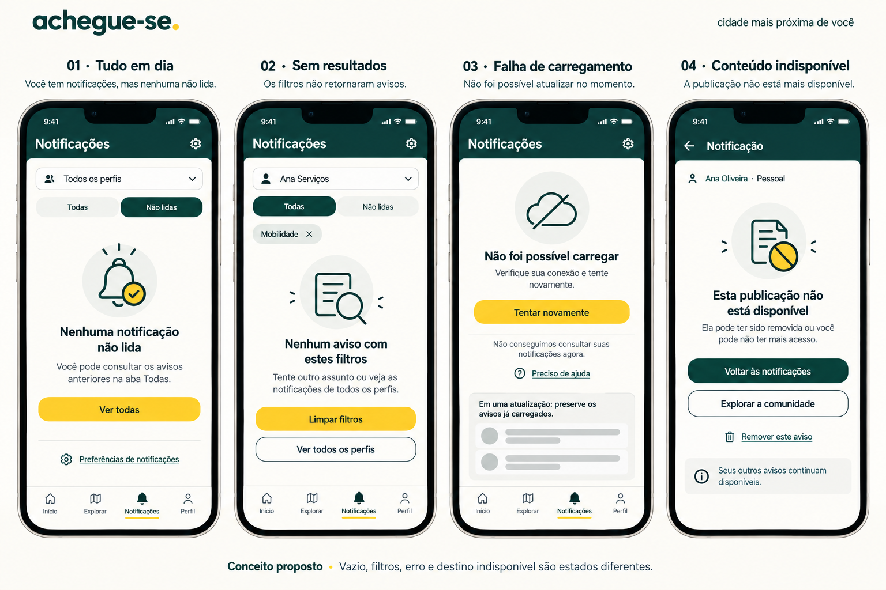
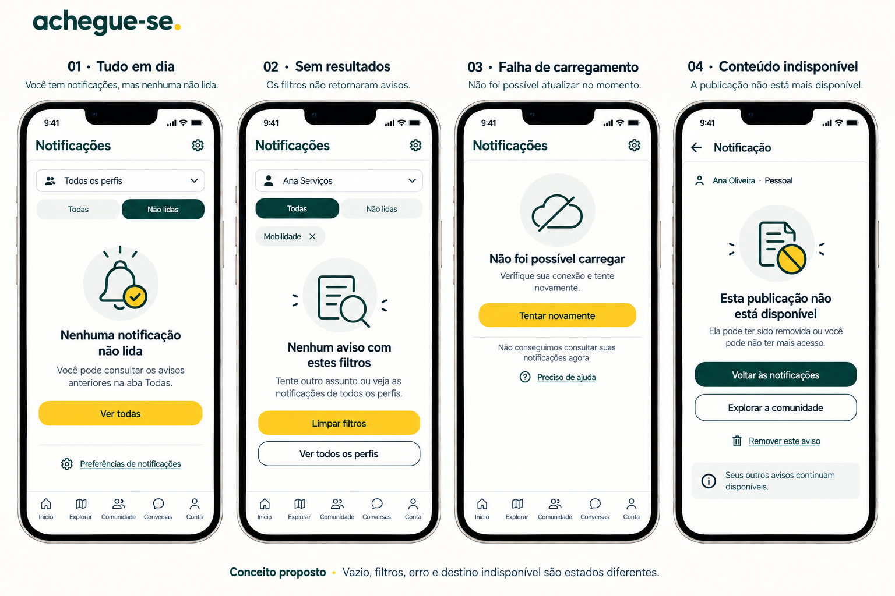
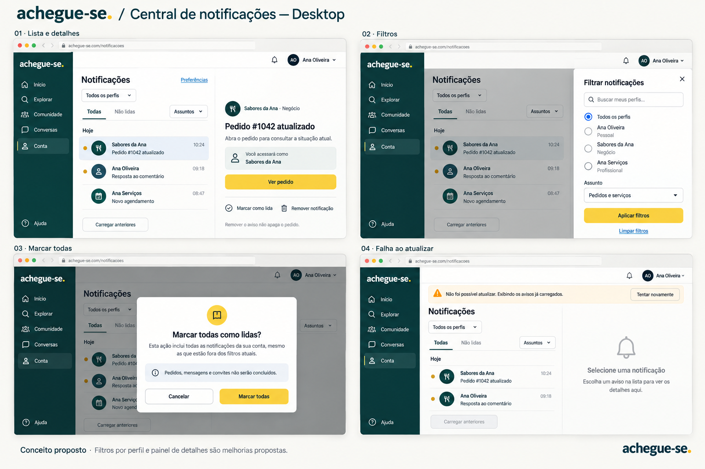

← CatálogoCentral de notificações
Lista, filtros, contexto, leitura e erros. Filtro por perfil e paginação precisam de contrato; leitura não resolve tarefa relacionada.
Documento da página · Registro da revisão
 072-notificacoes-mobile · Referência para revisão
072-notificacoes-mobile · Referência para revisão
073-notificacoes-estados-inicial · Histórico — não aplicar automaticamente
074-notificacoes-estados · Referência para revisão
075-notificacoes-desktop · Referência para revisão